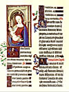
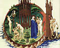
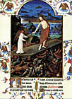
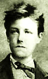

Un valsecito de esos con espíritu tanguero; para hacerlo se juntaron -en 1943- dos grandes: Charlo y Homero Manzi; como era de esperar, les salió muy bien. La versión es moderna, de Malena Muraya con guitarra.
Audio completo y con letra de Tu pálida voz : en Windows Media o en Real Audio.
(PS: vuelvo a postear esto, porque había puesto mal los links)
Del amado y de la amada (3 de 4)
Me acerqué a la obra de
Loreena McKennitt
no hace mucho, un poco desconfiado
por la componente "new age"... temía encontrarme con esas músicas
anodinas, sin estructura melódica ni armónica, hechas de puros
timbres acariciadores ('música de fondo para la relajación' y esas cosas).
Error. En realidad, por los dos discos que tengo ("The visit" y
"The mask and the mirror"), es música con componente celtas
e instrumentación moderna (y ciertamente "suave", apto para
música de fondo), pero antes que nada son canciones de formato
tradicional. Además, el acercamiento a la tradición se da
no sólo en lo musical, sino en las letras, con muchas alusiones
literarias, "cultas" y "populares". Todo con sencillez y buen gusto.
Una canción representativa de esto -y que da pie al tema que me interesa- está en "The mask and the Mirror", y se llama "The Dark Night of the Soul" (La noche oscura del alma). Grata sorpresa fue para mí encontrarme con esta bella adaptación de la poesía de San Juan de la Cruz.
Acá está la letra; la música pueden oirla en MP3 o en Real Audio, pero (ay!) sólo es un demo de 60 segundos, y deja afuera el estribillo. Usuarios de Kazaa y similares sabrán encontrarla ... (atención que es "McKennitt" , dobles consonantes, que muchos escriben mal).
Cada uno es libre de juzgar sobre la música y la letra; sobre la letra original, (el poema de
San Juan de la Cruz) no puede haber mucha diferencia de juicios... Si uno
tuviera que elegir la mejor poesía del idioma español de todos los tiempos,
probablemente esta sería la ganadora (compitiendo con el "Cántico"
del mismo Juan)...
Yo considero que la adaptación de la letra es muy buena ... con una objeción,
que es el motivo de este post. Loreena elige (y es uno de sus aciertos )
la quinta estrofa para repetirla, a modo de estribillo (chorus): comparemos
el original y la traducción/adaptación de esta estrofa:
|
¡Oh noche que guiaste! ¡oh noche amable más que la alborada! ; ¡oh noche que juntaste, Amado con amada, amada en el Amado transformada! |
Oh night ! thou was my guide, oh, night more loving than the rising sun ! Oh, night that joined the lover to the beloved one, transforming each of them into the other ! |
Qué lástima, me dije cuando escuché esto, ya le salió la componente new-age-pagana-inmanentista... pero en realidad, no es para tanto.
Se trata de esto: el poema original es, claramente, una alegoría del amor Dios-alma bajo la forma del amor humano: hombre-mujer. La traducción pierde así el sentido profundo de la cosa, con la traducción del último verso, por dos lados:
Primero, porque no se trata de que "cada uno se transforme en el otro": se trata de que el alma (la amada = el alma ), se transforma en el amado (el amado = Dios); es una trasformación en un sentido, que implica una sublimación, un enaltecimiento.
Segundo , y relacionado con lo anterior: se pierde el "sexismo" del original. Como venimos diciendo, esta alegoría tradicional, requiere para el alma de hombre el papel femenino, y para Dios el masculino. De ahí lo de Amada y Amado.
Y mi primera reacción fue achacar esto al espíritu "moderno" (o pos-moderno, para el
caso, lo mismo da), cerrado a la trascendencia y a las jerarquías (como dice el
mismo Peter Kreeft en su comentario al "Cantar de los Cantares": el amor
divino es "sexista"; y es un signo de estos tiempos que ese neologismo
tenga un sentido exclusivamente peyorativo).
Pero la verdad es que la culpa no es tanto de Loreena, ni de los tiempos: es
que resulta difícil ser fiel en la traducción al inglés; veo que la traducción clásica
católica (
E. Allison Peers) coincide con Loreena "Oh, night that joined Beloved with lover,
Lover transformed in the Beloved". Lástima...
Aunque en esta otra versión
se intenta ser fiel al "sexismo" original: "O night that has united /
the Lover with his beloved / transforming the beloved in her Lover.",
(traducción de Kieran Kavanaugh y Otilio Rodriguez ; desconozco cuál
será la versión más "autorizada").
Y también hay que reconocer, para no ser más sanjuanistas que San Juan,
que en su comentario el autor toca poco o nada en el aspecto sexista de su poema,
si no me equivoco...
Para terminar, ya que alguna vez traté de sacar los acordes y en internet no los encuentro, aquí van, para el que le interese... aunque mi oído musical es muy flojito, y lo saqué medio de memoria...así que no hay que confiar, probablemente está todo mal. Acá va en La , un semitono abajo del original. Se agradecen correcciones.
A E A D A/C# Bm E A [repite el par anterior] F#m D A D A/C# Bm E F#m D A F#m D A E A |
estribillo : A E A F#m D A E F#m D A E F#m D A E A |
Me contesto a mí mismo:
Aquel soneto "mariano" (Oh elegida por Dios antes que nada...) era de Miguel Hernández, nomás.
Está en el libro "Otros poemas" (1933-1934), junto con otros dos sonetos dedicados "a María Santísima" (ese es el título que encabeza el conjunto).
Curioso.
"yo no te cambio por nada"...
una especie de jaculatoria que me hice hace mucho, sobre un verso de los redonditos de ricota, y que me sigue acompañando (la jaculatoria, no los redonditos de ricota).
Se dirije a Jesús, claro está (la jaculatoria...).
-
El rezo del Rosario: 31 días, 31 maneras -
Número 19
( por John Da Fiesole de Disputations; adaptación y traducción libre )
¿Qué hacemos con nuestro viejo rosario de 15 décadas, ahora que de Italia ha llegado uno nuevo de 20 décadas?
Acaso usarlo para rezar las Estaciones de la Cruz (el Vía Crucis).
Nada impide que uno rece el Via Crucis fuera de Cuaresma, y en solitario. En realidad, la Iglesia alienta esta práctica, al ofrecer una indulgencia plenaria -sujeta a ciertas condiciones-. Y hay muchas colecciones excelentes de lecturas y oraciones para el Via Crucis, aunque las utilizadas en el rezo de Cuaresma al que asistí en mi parroquia no han sido particularmente inspiradoras. Una década del Rosario en lugar de -o además de- las oraciones del libro del "Camino de la Cruz" aporta a esta devoción casi una hora de meditación interior sobre la pasión y muerte de Cristo. Y al mismo tiempo, dirige la mente hacia los aspectos marianos de la pasión.
Y acá seguramente todos los lectores protestantes -y algunos católicos- dirán: "Es la Pasión y Muerte de Cristo! No podemos dejar un poco de lado esa mariolatría, ni siquiera ahora ? "
Pero contemplar los aspectos marianos de la pasión no significa mirar a María mientras ella mira a su Hijo sufrir y morir, se trata de mirar al hijo sufrir y morir, pero por los ojos de ella. No hay que fijar la vista en María: hay que usar a María para fijar la vista en Jesús; a ella le pedimos: "Enséñanos cómo debe un cristiano mirar la crucifixión".
Si bien las estaciones del Via Crucis son catorce, ultimamente suele agregarse una estación quince: la Resurreción, que se reza frente al tabernáculo. De esta manera, podemos usar un rosario tradicional. También (cuando la obtención de la indulgencia no nos resulta importante, o posible) uno puede, si así lo prefiere, usar las Estaciones de las Escrituras de Juan Pablo II.
-
Número 20
- Quién está involucrado ? Jesús, por supuesto; y María. También pueden hallarse aspectos inesperados si pensamos en términos de otras personas asociadas -aunque sea incidentalmente- con el misterio.
- Qué efecto tiene el hecho ? Qué cambios trae aparejado, y cómo han afectado la historia esos cambios, hasta el día actual ?
- Dónde ocurre el misterio ? Es un lugar esperable o un lugar inesperado ? Dónde encuentro esos lugares en mi propia vida ?
- Con qué se lleva a cabo el misterio ? Cómo actúan juntos lo natural y lo sobrenatural para que el hecho sea posible ?
- Por qué ocurre el hecho ? Cuál es la finalidad de los actores ? Se alcanza esa finalidad o no ?
- Cómo es efectuado ? Con qué emociones, impulsos, con el ejercicio de cuáles virtudes y cuáles vicios ?
- Cuándo ocurre ? Qué marca su "puntualidad" , y cómo se relata su tiempo con el de los otros misterios, anteriores y posteriores ?
Quis, quid, ubi, quibus auxiliis, cur, quomodo, quando
Estas son las siete circunstancias del acto humano, según nota Santo Tomás citando a Tulio.
Ellas nos sugieren lo que podríamos llamar el Rosario Circunstancial, en el cual cada misterio se considera según una circunstancia:
Podemos elegir una de estas circunstancias, para aplicarla a todas las décadas recitadas durante la semana; y cambiar de circunstancia para la siguiente semana.
Este método puede servir -sobre todo el "cuándo" y el "dónde"- para aprender a discernir mejor en la profundidad de los planes de Dios, al enviar a su único Hijo al mundo para sufrir y resucitar en la gloria.
Que un lector de Página 12 me mande un mail anónimo para restregarme su placer ante la noticia de lo del padre Grassi, no me sorprende nada.
Lo que sí me despierta un poco de curiosidad es que, revisando el header, encuentro que el mail parece haber salido directamente del server de Página 12 :
Received: from mercurio.feedback.net.ar (mercurio.feedback.net.ar [200.69.65.8])
by jeeves.sinectis.com.ar (Postfix) with ESMTP id 23DE449E73
for <hgonzal@sinectis.com.ar>; Fri, 25 Oct 2002 12:52:16 -0300 (GMT+3)
Received: from pagina12.feedback.net.ar (pagina12.feedback.net.ar [200.69.65.115])
by mercurio.feedback.net.ar (Postfix) with SMTP id 373FB339
for <hgonzal@sinectis.com.ar>; Fri, 25 Oct 2002 12:52:15 -0300 (ART)
Received: by pagina12.feedback.net.ar (sSMTP sendmail emulation); Fri, 25 Oct 2002 12:28:44 -0300
Date: Fri, 25 Oct 2002 12:28:44 -0300
To: hgonzal@uolsinectis.com.ar
Subject: NOTICIA ENVIADA POR El inqusidor
From: nada@nada.com
Por cierto que, más allá del caso, todo mensaje anónimo nunca me ha dicho y nunca me dirá nada sobre nada, excepto sobre la altura del remitente. Sea del palo que sea...
-
...
Y si así fuera, si la lógica uniese las vidas de los hombres y diese unidad a la de cada uno de ellos, ¿de dónde vendrían estos días de amargor, de soledad, en que uno quiere maldecir y bendice? Si la Providencia es lógica, ¿de dónde esta soledad hermética frente a los de fuera y entre ellos?
Filósofos ha habido que se han empeñado en hacer filosofía de la historia, en poner en música la tormentosa letra de ella, en escribir la lógica de la Providencia. Y es claro, la Providencia ha dejado de serlo a sus ojos. En cuanto la Providencia se nos aparece lógica deja de aparecernos Providencia, y nos resulta ciega, sorda y muda.
No, la Providencia no es lógica, ni Dios es ningún abogado. "Quién sabe si todo esto es santo allí abajo? ", como dijo Antígona a Creonte. Para lógica, la de los tiranos.
¿Por qué dijo Pascal que también el corazón tiene su lógica?
No, la del corazón no es lógica; el corazón no habla. Cuando
sufre de veras, sufre en silencio.
...
Las lecturas de ayer incluyeron esta famosa parte del tercer capítulo de la "carta a los efesios", uno de los tutti más entusiastas y más gozosos de San Pablo:
-
...
Por eso doblo mis rodillas ante el Padre,
de quien toda paternidad toma nombre, en el cielo y en la tierra,
para que os conceda, según la riqueza de su gloria, que seáis fortalecidos por la acción de su Espíritu en el hombre interior,
que Cristo habite por la fe en vuestros corazones, para que, arraigados y cimentados en el amor,
podáis comprender con todos los santos cuál es la anchura y la longitud, la altura y la profundidad,
y conocer el amor de Cristo, que excede a todo conocimiento, para que os vayáis llenando hasta la total Plenitud de Dios.
A Aquel que tiene poder para realizar todas las cosas incomparablemente
mejor de lo que podemos pedir o pensar, conforme al poder que actúa en nosotros, a él la gloria en la Iglesia y en Cristo Jesús por todas las generaciones y todos los tiempos. Amén
Anteayer, en misa; algo más atento que de costumbre; me impresionan las lecturas; textos olvidados o casi desconocidos para mí, sonidos de reconciliación, consuelo y dicha, más allá de lo que uno puede esperar o imaginar... :
-
... antes estabais lejos de Cristo,
excluidos de la ciudadanía de Israel y extraños a las alianzas de la Promesa,
sin esperanza y sin Dios en el mundo.
Mas ahora, en Cristo Jesús, vosotros, los que en otro tiempo estabais lejos,
habéis llegado a estar cerca por la sangre de Cristo. Porque él es nuestra paz....
(Efesios 2:12)
Amor y Verdad se han dado cita, Justicia y Paz se abrazan...
(Salmo 85)
Dichosos los siervos, que el señor al venir encuentre despiertos:
yo os aseguro que se ceñirá, los hará ponerse a la mesa y,
yendo de uno a otro, él les servirá
(Lucas 12:37)
En Flos Carmeli Steven está entregando The Raven (El Cuervo), el poema más conocido de Edgar Allan Poe. Un poema verdaderamente notable, con una fuerza y una perfección muy propias, y que ha atraido el amor o el odio de casi todos los lectores de poesía. Amor y odio, digo, porque muchos literatos lo consideran una muestra del peor gusto en poesía, con su ritmo machacante ( ta-ta-TA-ta, ta-ta-TA-ta), su clima demasiado obvio y su estructura demasiado "prolija"... Muchos otros (Baudelaire, para empezar) lo ponen por las nubes. A mí me gusta, pero eso no es señal de nada.
En castellano, hay unas cuantas versiones; la mejor parece ser la de Carlos Obligado (argentino, hijo de Rafael Obligado). Y acá está.
Es buen ejercicio, para el que no sabe apreciar poesía, empezar por algo así, en voz alta y con el ritmo bien marcado.
-
Cierta vez que promediaba,
triste noche, yo evocaba,
fatigado, en viejos libros,
las leyendas de otra edad.
Ya cejaba, dormitando,
cuando allá, con toque blando,
con un roce incierto, débil,
a mi puerta oí llamar.
"- A mi puerta un visitante
- murmuré - siento llamar;
eso es todo, y nada más".
...
Nótese que la traducción logra la pequeña hazaña de respetar el ritmo (trocaico) y la mayoría de las rimas, con un lenguaje poéticamente aceptable, a expensas de algunos pocos versos algo forzados, y de la inevitable asonancia con el pie : no hay suficientes consonancias para el "nada más", y ya bastante fortuna es que la traducción de "nevermore" tenga igual cantidad de sílabas y acentuación...
Si alguien conoce mejor traducción, que avise.
-
...El padre Mowbray había acertado con respecto a Rex; a mí me llevó
un año de matrimonio verlo. Pura y simplemente, le faltaba algo.
No era en absoluto un ser humano completo, sino un trocito, que se
había desarrollado de manera antinatural; como dentro de una botella,
un organismo mantenido vivo en un laboratorio.
Yo creía que era una especie de salvaje primitivo; pero era de lo más
moderno, absolutamente al día, algo que sólo esta época
espantosa podría producir. Un pedacito diminuto de hombre
que pretende ser un hombre entero...."
(Julia, personaje de "Retorno a Brideshead", novela de Evelyn Waugh)
Del amado y de la amada (2 de 4) :
Es claro que la referencia más conocida -y más "autorizada"- al tema es El Cantar de los Cantares, uno de los libros del Antiguo Testamento.
Un texto poético de contenido erótico, preferido de los místicos; San Juan de la Cruz y Santa Teresa lo glosaron.
Antiguamente, y probablemente con buen criterio, los biblistas (judíos o cristianos) no recomendaban su lectura a los jóvenes o "no iniciados"; si nos situamos en el siglo XVI, a esto se sumaba la valla idiomática: la Iglesia no alentaba las traducciones del latín de la Biblia; abundaban herejías de "iluminados", lectoras de Paulo Coelho y cosas peores; y la Inquisición no se andaba con chiquitas ( la misma Teresa tuvo que hacer esconder sus escritos...).
En aquellos tiempos tan difíciles (y en aquellos tiempos tan fructíferos),
Fray Luis de León
-poeta y prosista de excelente gusto, y hombre
de buen sentido- hizo una traducción "privada" del Cantar de los Cantares,
con un comentario detallado; dicen que para una prima monja.
Indiscreciones, sincero entusiasmo, envidias o lo que sea... las copias
empezaron a circular y llegaron a manos de algún inquisidor de poca
teología y nula poesía... y fray Luis fue a descansar unos años a la sombra.
Cuentan que al salir retomó sus clases, y empezó con la frase, "Decíamos ayer...",
que se hizo proverbial...
Pero mejor recuerdo es la preciosa
décima:
me tuvieron encerrado.
Dichoso el humilde estado
del sabio que se retira
de aqueste mundo malvado,
y con pobre mesa y casa,
en el campo deleitoso
con sólo Dios se compasa,
y a solas su vida pasa,
ni envidiado ni envidioso.
Pero volviendo al tema: el texto de su traducción y comentario de los Cantares
afortunadamente se conservó (aunque, naturalmente, se le pasaron las ganas
de traducir... con lo cual, al decir del P. Castellani, los hispanos perdimos
la oportunidad de tener una buena traducción de la Biblia, del nivel de la inglesa -la KJV-
... y quién sabrá medir el peso de esta desgracia para el idioma de los españoles...).
Recién se publicó en 1798. En la segunda edición, el editor agregó una versión
en verso ("en octava rima") , encontrada en unos manuscritos... y ese conjunto
(versión literal; comentario; versión en verso) es el que tengo en mi biblioteca
(edición "Biblioteca Personal Borges", Hispamérica). En el pequeño prólogo,
Borges comenta:
"... el Cantar de Cantares. [fray Luis] lo define como égloga pastorial
y le da un sentido alegórico. El esposo, proféticamente, sería
Cristo; la esposa, la Iglesia. El amor terrenal sería un emblema
del amor divino. Quizá no huelga recordar que la más encendida
obra de la lengua castellana, la de San Juan de la Cruz, procede
de este libro."
Como casi siempre, Borges se esfuerza (y lo logra) en dar
la nota del erudito aplomado. Como muchas veces, macanea;
al punto de que uno duda haya leído de este libro más
que la línea inicial (donde dice eso de la "égloga pastoril").
Si por algo se caracteriza el comentario
de fray Luis es por no ocuparse de la interpretación
alegórica; él se dedica casi exclusivamente
a explicar el sentido literal del texto.
Claro que la interpretación tradicional se supone sabida.
El "esposo" es Dios. La "esposa" es, según
el plano en que nos situamos, el pueblo de Israel la Iglesia, o el alma.
Todo esto viene gracias a que (o culpa de que) hace un par de semanas Alejandro me preguntó si tenía la versión de fray Luis del Cantar de Cantares, que en Internet no se encuentra... yo no la tenía, pero me puse a leer la versión en verso, y la encontré hermosa. Y decidí escanearla. Y acá está.
El caso es que después me agarró la duda: porque no encontré esa
poesía en ningún lado, ni siquiera mencionada... así que me quedan
sospechas sobre su autenticidad. Además -como Alejandro, buen
versificador él, notó enseguida- tiene varias imperfecciones métricas...
En fin , si alguien sabe... avise.
Igual, vale la pena leerla:
Mio es el Esposo, mio, y muy amado,
y yo soy toda suya, y él me quiere
de aquel, qu' entre las flores su ganado
apascienta, seré mientras viviere.
Quando las sombras huyan por el prado,
vendraste á mí, mi amor , si te pluguiere,
como la cabra, ó corzo bien ligero,
saltando por los montes, que te espero.
..
Del Cantar de cantares, versión en octava rima, fray Luis de León
Cuando el lector moderno lee por primera vez esto, y oye de la "interpretación alegórica", tiende
a sonreírse con incredulidad... (ma'qué Dios ma'qué alma ... dejate de joder...esos son inventos de los curas,
de esos puritanos que no quieren saber nada con el erotismo humano, que odian el cuerpo y el sexo, y etc, etc, etc...;
el que escribió esto pensaba en "eso" y en nada más que "eso"... ).
La obra de san Juan de la Cruz (y esta misma poesía de fray Luis) deberían ser respuesta suficiente;
pero a los cínicos no hay que contestarles.
Igualmente, notemos un par de cosas: naturalmente, para un cristiano (o para un místico)
"el amor humano es emblema del amor divino", como dice el mismo Borges;
pero esto no debería ser nada incomprensible,
aún para un ateo de buena voluntad; y -sobre todo- debería entenderse que
esto no "rebaja" el amor humano, sino más bien lo exalta (es irónico, además,
que los que salen con estas objeciones son los más proclives a rebajar
los amores humanos en la práctica).
Y lo mismo pasa con todo placer, toda
belleza sensible.
Nadie con una pizca de sentido común puede dudar
del enorme disfrute que sentían místicos (y ascetas) como San Juan
de la Cruz o San Francisco ante las bellezas de la naturaleza,
ellos que justamente veían en esas bellezas un reflejo de Dios.
Disfrute y alegría que son rarísimos entre los notorios
militantes del "Carpe Diem"...
-
El rezo del Rosario: 31 días, 31 maneras -
Número 18
- El Bautismo de Cristo. El ministerio de Juan, respuesta al llamado de Dios recibido en el seno de Isabel, fue ocasión de la primera manifestación de la divinidad de Jesús. Porque "yo he venido a bautizar en agua para que él sea manifestado a Israel" (Juan 1:31)
- El milagro en Caná En su primer milagro, Jesús proveyó una cantidad enorme del mejor vino; pero Juan en el desierto casi no comía ni bebía. El ayuno del compañero del novio precede al banquete del novio. Una lección tan importante para los que esperaron al Esposo en su primer venida, como para los que esperamos su vuelta.
- La predicación del Reino También Juan predicó la venida del Reino; aunque -puesto que él no era la luz- su prédica era de preparación más que de revelación. Y en realidad, toda prédica es preparación, hasta que el hijo de Dios se revela, El y su Padre, a quien él elige.
- La transfiguración Es la segunda gran teofanía de la vida pública de Jesús, y es prefigurada por la visión de la paloma en el Bautismo de Juan. Juan, sin ser apóstol, fue el más grande de los profetas; y así no se largó a decir bobadas como Pedro, sino que supo y dio testimono de que Jesús era el Cordero de Dios, que quita los pecados del mundo.
- La institución de la Eucaristía Una vez más, el testimonio de Juan es el ayuno anterior a la fiesta de la Eucaristía. En esto, el más pequeño del Reino -según reveló Jesús- es más grande que Juan; y cómo no lo sería, con Dios mismo como comida - pero esa grandeza es un don gratuito de Dios.
( por John Da Fiesole de Disputations; adaptación y traducción libre )
- Hubo un hombre, enviado por Dios: se llamaba Juan.
Este vino para un testimonio, para dar testimonio de la luz, para que todos creyeran por él.
No era él la luz, sino quien debía dar testimonio de la luz.
Si en los Misterios de Luz Cristo "se manifiesta de manera especial" como luz del mundo (según dice Juan Pablo II en Rosarium Virginis Mariae), entonces ciertamente Juan el Bautista es quien da testimonio de los Misterios de Luz:
|

EL SENTIDO DE LAS CANCIONES DE CUNA
Jacobo Fijman
En el principio era el verbo, y el espíritu de Dios
se movía sobre las
aguas.

Pero Adán pecó, y Eva pecó, y entonces ambos oyeron mal.
Y aunque el rebaño de Adán y Eva se multiplicó, fue siempre una
posteridad de pecado. Y a la música del paraíso, a las canciones de cuna del Don, o sea de las ordenaciones maravillosas o del seno de Abraham y de todos los demás nombres de Dios que es obscuro, sucedió la música del mal, las canciones de cuna del demonio encerradas en el Dan; hasta que un día Dios, compadecido de su posteridad reunida en sinagoga (esto es, en rebaño) sacó, como había sacado la primera vez del cuerpo de Adán, a Eva (aun morena de culpas en el Cantar de los Cantares), sacó de Israel el cuerpo para el hombre perfecto, y fue el Verbo Encarnado.

Don. Don. Don.
Don de la última Cena. Plegaria del primer día de la creación. Símbolo
cantado por Cristo sobre el alfabeto que nombra todas las cosas asequibles a
los sentidos y todas las figuras del prodigio y del sueño.
Don. Don. Don.
Canciones de cuna, canciones del alba.
Ora pro nobis: porque el sentido interesante de las canciones de cuna
es la salvación anunciada a María, virgen de vírgenes.
Nombremos también de una vez a Pitágoras, rey también de la alabanza, que enumeró estrellas, soles y lunas en el silencio como Moisés en los cuarenta días con sus noches en el ayuno y la penitencia, y a quien el Dan. Dan. Dan. -o sea la imitación de las canciones divinas por el demonio y sus ángeles, no consiguieron engañar. Canciones del Dan que luego oye repetir Jesús en el desierto.
Don. Don. Don.
Don. Don. Don.
Suenan las campanas. Agnus Dei, miserere nobis.
|
{kind=link}
-
....
Cállate, cállate de un vez.... Es la vergüenza, el reproche: Satanás que dice que el fuego es innoble, que mi cólera es espantosamente tonta. - Basta ! ...
Errores que se me sugieren, magias, perfumes falsos, músicas pueriles.
-Y decir que yo poseo la verdad, que veo la justicia: tengo el juicio sano y firme, estoy listo para la perfección...
Orgullo. -- La piel de mi cabeza se me reseca. Piedad ! Señor, tengo miedo. Tengo sed, tanta sed ... Ah ! La infancia, el pasto, la lluvia, el lago sobre las piedras, el claro de luna cuando el campanario daba las doce... el diablo está en el campanario a esta hora, María ! Virgen santa!... -- Horror de mi estupidez.
Allí, ¿ no son esas almas honestas, que me quieren bien ? ... Vengan... Tengo una almohada sobre la boca, no me escuchan, son fantasmas. Por otra parte, nadie piensa jamás en los demás. Que no se me acerquen. Huelo a quemado, eso es cierto.
Las alucinaciones son innumerables. Es eso lo que siempre he tenido: no más fe en la historia, olvido de los principios. Me lo callaré: poetas y visionarios se llenarían de celos. Soy mil veces el más rico, seamos avaros como el mar.
...
Arthur Rimbaud
(de Una temporada en el infierno)
 20 de octubre, cumpleaños de Rimbaud, como recuerda Dylan.
Sí, ya sé que ya dije que los santos se recuerdan en la fecha de su muerte, no de su nacimiento. Qué me importa.
Y sí, se suponía que la respuesta natural a la objeción
era "Rimbaud no es un santo, precisamente"; pero
no se me da la gana de contestar eso.
Más bien me dan
ganas de recordar este texto, un poco
desorbitado, del P. Castellani,
de su
carta a Leónidas Barletta:
-
...
"Y decidí ponerme de parte de los astros", es decir, de los santos. Pobres santos de hoy, que ya no son astros; son estrellas perdidas en medio de la tempestad de las tinieblas, que vertió la Quinta Fiala; que van como pueden, dando mugidos y topetazos de toros ciegos, aletazos al sesgo de águilas en la tormenta.
Los santos antiguos, fueron lucientes y luminosos; algunas veces milagrosamente fuertes: Bernardo de Claraval, que escribe como un igual a todos los señores feudales de Europa, y los levanta en mesnadas que arroja contra el Turco; Ignacio de Loyola, que organiza batallones espirituales para luchar contra la Reforma; Teresa de Jesús, que recorre España fundando "palomarcitos de la Virgen" refugios de la penitencia y la contemplación, cenáculos de gozo doliente de la fe; Isidro Labrador, a quien un ángel le ara el campo cuando concurre a las manifestaciones peronistas; Vicente Ferrer, que hace temblar a los pecadores y corrije a media Europa con el anuncio del próximo Fin del Mundo, que después no se verificó; Francisco de Paula, que hace tiritar a Luis Onceno; Juana de Arco, que manda batallones, gana batallas y desafía llorando a la hoguera; Domingo de Guzmán, que inventó la que debajo de él solamente fue Santa Inquisición; el pobrecito de Asís, poeta llagado; Luis Gonzaga, tronchado lirio de caridad; Antonio de Padua, dotador de doncellas y milagrero jefe... La lista sería interminable.
Esos santos de antes ya no hacen fe en el mundo. Es que ya no hay más tampoco, visiblemente al menos. Son historias, son imágenes de yeso, y son biografías untuosas en latín. O son vistas en el cine, entre una "de cow-boys" y otra "de amores".
Delante de ellos, yo me quedo boquiabierto, pero no puedo hablar; no puedo hablar con ellos como con hermanos. Pasan sobre mí envueltos en sus armaduras, hopalandas o aureolas.
Si estoy triste no me consuelan, porque ellos no fueron tristes. Si
estoy alegre no se congratulan, porque mi alegría de perro cansado
no es el éxtasis de ellos. Ellos eran vigiles y madrugadores, y yo
lo que quiero es dormir. Mis dificultades, ellos no las tuvieron ni
las entienden. ¿Qué le diría yo si lo viera a mi padre San Ignacio
de Loyola? Me callaría como un muerto. Lo mismo que delante de su
sucesor Juan Bautista Jannssens. A Santa Teresa cuando una monja le
iba con tentaciones sexuales, se le fruncía el entrecejo y decía:
"Vaya a la madre Tal y Cual, porque yo de esas cosas nada
entiendo". Así todos esos santos fuertes, no entenderían nada de
mis impotencias; todos esos luminosos, de mis oscuridades.
"¡Cantad
al Señor, hermano -me dirían-. Exultad en el Señor Dios fuerte,
tañed la lira y la cítara y dad saltos de alegría como el recental
al ver la ubre; porque grande es el Señor y abundosa su
misericordia. ¡Alegráos en el Señor siempre! ¡De nuevo os digo:
alegraos!".
Un cuerno.
Yo decidí ponerme de parte de ellos. El ideal que representan es el
mío, y ese ideal existe, aunque no viviera en ninguna parte del
mundo, sino solamente en mí, lo cual está muy lejos de ser verdad,
por suerte.
Mas no son esos los santos de los que me acuerdo cuando tengo
necesidad de acordarme de algo. Me acuerdo espontáneamente por
ejemplo del jorobado Kirkegord, escritor y editor de libros
invendibles y cifrados -¡ al fin y al cabo uno es libre en sus
devociones!-. ¡Me acuerdo incluso del Mahatma Gandhi, el ayunante!
-que fue moro y sarraceno-. Me acuerdo del dandy Baudelaire,
condenado de la justicia burguesa por escribir versos "obscenos";
me consuelo, ¡cómo seré de bestia! pensando en el poeta Baudelaire
cercado en el estrépito de la rue D'Assas. Me acuerdo del botarate
León Bloy, romanticón presuntoso, pedigüeño y exagerado. Me acuerdo
del calumniado y despreciado Luis Veuillot. Me acuerdo del ruiseñor
fusilado Jacinto Verdaguer. Me acuerdo de Balmes, liquidado a los
30 años. Me acuerdo de Rosmini, "incanonizábile", como dijo el
cardenal Antonelli. Me acuerdo de Gioberti, sacerdote sufrido hasta
la muerte. Me acuerdo hasta de Arturo Rimbaud, que probablemente
fue un loquito; y de Schopenhauer que fue un ateo; prusiano por
añadidura.
Es decir, no me acuerdo, no puedo acordarme, de Cristo Transfigurado, sino de Cristo en el otro monte. No me puedo figurar al Cristo sublime, o mejor dicho, me lo figuro solamente en lo que es más sub-lime, "por debajo del límite" cuando la Divinidad encarnada no llegaba ni siquiera al límite del hombre. y El era gusano y no hombre, escarnio del pueblo e ignominia de la plebe, colgado de un palo en el otro Monte.
Una vez les hice un poema a todas las santas del paraíso, y una letanía a todos los santos; mas ahora solamente le rezo a Santa Tais, que no sé si estará canonizada; y a San Soren Kirkegord, que ciertamente nunca lo será...